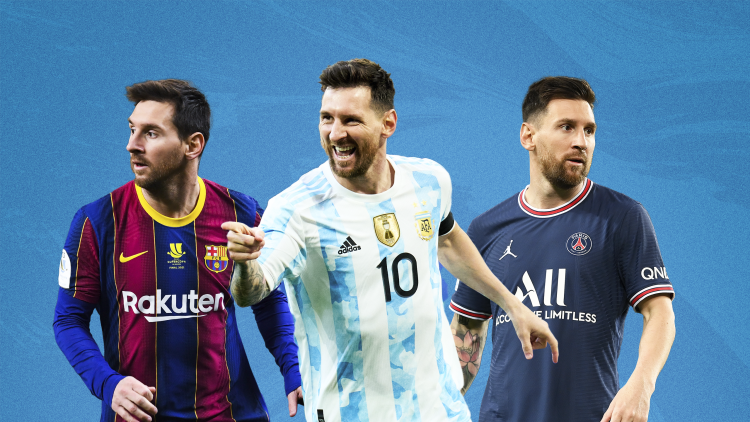
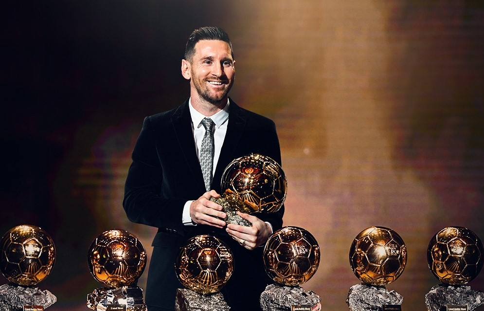

Nacido el 24 de junio de 1987 en la pintoresca ciudad de Rosario, Argentina, Lionel Andrés Messi desde muy temprana edad demostró una afinidad extraordinaria con el balón. Sus primeros toques de balón se dieron en los estrechos callejones de su barrio, donde su destreza y agilidad captaron la atención de quienes tuvieron el privilegio de presenciar sus primeros pasos en el mundo del fútbol. A los escasos 8 años, Messi ingresó en las filas juveniles de Newell's Old Boys, un club local que le brindó la plataforma para desarrollar su inmenso talento.
Sin embargo, la vida de Lionel no estuvo exenta de desafíos. A una edad temprana, fue diagnosticado con una deficiencia de hormona de crecimiento, lo que no solo representó un obstáculo físico, sino también un peso financiero para su modesta familia. Superar este desafío se convirtió en una lucha compartida, y fue entonces cuando el destino intervino de manera sorprendente.
En el año 2000, el FC Barcelona, reconocido por su visión y talento para descubrir jóvenes promesas, identificó el fulgurante potencial de Messi. Con una oferta que abarcaba no solo su formación futbolística, sino también el crucial tratamiento de crecimiento, el club catalán abrió sus puertas al joven Messi y a su familia. Este gesto no solo marcó el comienzo de una relación con uno de los clubes más prestigiosos del mundo, sino también un alivio económico significativo para su familia.
El 17 de septiembre del mismo año, un joven Lionel Messi y su familia emprendieron el viaje hacia la vibrante ciudad de Barcelona. Allí, en la emblemática academia juvenil del Barcelona conocida como La Masia, Messi encontró un nuevo hogar y una oportunidad dorada para nutrir su talento. Si bien las primeras etapas estuvieron acompañadas de desafíos de adaptación, el incansable espíritu de Messi y su dedicación infatigable lo llevaron rápidamente a destacarse en las divisiones juveniles del club.
El 16 de octubre de 2004, un hito que quedaría grabado en la historia del fútbol se materializó. A la edad de 17 años, Lionel Messi hizo su debut con el primer equipo del FC Barcelona en un enfrentamiento de la Liga Española contra el RCD Espanyol. Desde ese momento, Messi se convirtió en un componente fundamental de la magia del Barcelona, dejando una impronta imborrable en competencias de renombre internacional, incluyendo la Liga de Campeones de la UEFA y LaLiga.
Así comenzó el viaje de un joven prodigio argentino que, con el tiempo, se transformaría en una leyenda global del fútbol. Lionel Messi, un nombre que resonaría en los corazones de aficionados y admiradores de todo el mundo, y cuyo legado en el deporte redefiniría para siempre los límites de la excelencia.
Clubes
Newell's Old Boys
Después de iniciar su camino en el fútbol en las divisiones juveniles de Newell's Old Boys en su ciudad natal, Messi regresó brevemente al club en 2020 en un gesto de cariño y agradecimiento hacia sus raíces.
La carrera de Lionel Messi no solo está marcada por su habilidad extraordinaria, sino también por su dedicación, humildad y contribuciones al mundo del fútbol. Su legado perdurará en la memoria de aficionados de todo el mundo y en la historia del deporte rey.
Selección Argentina
Además de sus logros a nivel de clubes, Messi ha sido un pilar fundamental para la selección argentina. Ha representado a su país en múltiples competencias internacionales, incluyendo Copas del Mundo y Copas América. En 2021, Messi guió a Argentina hacia la victoria en la Copa América, obteniendo su primer título con la selección y dejando una marca indeleble en la historia del fútbol argentino.
F.C Barcelona
Lionel Messi pasó la mayor parte de su carrera profesional en el FC Barcelona, el club que lo acogió desde su adolescencia. Desde su debut en 2004, Messi dejó una huella imborrable en la historia del club. Durante su tiempo en el Barcelona, Messi ganó numerosos títulos, incluyendo 10 títulos de LaLiga, 7 Copas del Rey y 4 títulos de la Liga de Campeones de la UEFA. Además, Messi se destacó individualmente, ganando múltiples premios FIFA al Jugador del Año y la Bota de Oro por ser el máximo goleador de Europa.
Paris Saint-Germain
Después de su paso por el Inter de Miami, Messi firmó con el Paris Saint-Germain (PSG) en agosto de 2021. Este traspaso marcó un hito en el mundo del fútbol y generó una gran expectación. En el PSG, Messi se unió a un elenco de estrellas y continúa demostrando su clase y habilidades excepcionales en el terreno de juego.
Inter de Miami
Después de su exitosa etapa en el Barcelona, Lionel Messi se unió al Inter de Miami de la Major League Soccer (MLS) en Estados Unidos. Su llegada al Inter de Miami generó una gran expectación y entusiasmo entre los aficionados al fútbol en los Estados Unidos, marcando su primera experiencia en el fútbol estadounidense.

Premios
Lionel Messi, el maestro del balón, ha cosechado una colección impresionante de premios individuales a lo largo de su ilustre carrera. Su talento excepcional y habilidades asombrosas en el terreno de juego han sido reconocidos y celebrados en todo el mundo. Messi ha sido galardonado con múltiples títulos al Jugador del Año, consolidándose como un referente del fútbol a nivel global. Su capacidad para deslumbrar a las audiencias con su destreza, visión y precisión en el juego lo han catapultado hacia la cima de la élite futbolística.
Entre los premios más destacados que adornan la vitrina de Messi se encuentran los premios FIFA al Jugador del Año y la Bota de Oro, ambos testimonio de su habilidad para marcar goles en un nivel insuperable. Estos premios no solo son reconocimientos a su destreza técnica, sino también testimonios de su impacto profundo en el deporte más querido del mundo.
Sin embargo, la coronación máxima en la carrera de Messi reside en los Balones de Oro. Este premio, considerado el pináculo del reconocimiento individual en el fútbol, ha sido otorgado a Messi en múltiples ocasiones. Cada Balón de Oro es una afirmación de su dedicación, compromiso y capacidad para sobresalir en cada temporada.
Desde su primer Balón de Oro en 2009 hasta los más recientes en años posteriores, Messi ha demostrado una consistencia asombrosa en su excelencia futbolística. Cada premio es un testimonio de su capacidad para reinventarse, superar desafíos y elevar su juego a nuevas alturas. Estos Balones de Oro no solo son trofeos, sino también testigos de la dedicación incansable de Messi, su genio futbolístico y su contribución perdurable al mundo del fútbol. Su legado continuará inspirando a futuras generaciones de jugadores y aficionados alrededor del globo. Lionel Messi, el inigualable maestro del fútbol, seguirá siendo una leyenda inmortal en la historia del deporte.

La Gran Conquista
Entre los capítulos épicos de la carrera de Lionel Messi, destaca el logro supremo: la Copa del Mundo. En el año 2021, Messi guió a la selección argentina hacia la victoria en la Copa América, un título que llevaba décadas eludiendo al equipo nacional. Este triunfo fue más que una simple conquista; fue la culminación de años de arduo trabajo, perseverancia y el anhelo de Messi de llevar la gloria a su país.
La final de la Copa América en el Estadio Maracaná de Río de Janeiro se convirtió en el escenario de una actuación magistral de Messi. Con una visión de juego única, regates exquisitos y una precisión letal en cada pase, Messi no solo llevó a su equipo hacia la victoria, sino que también dejó una marca imborrable en la historia del torneo.
El sonido del silbato final marcó el comienzo de una celebración que estremeció a toda Argentina y resonó en el corazón de los aficionados alrededor del mundo. Messi, con la bandera argentina sobre sus hombros y el trofeo en sus manos, encabezó una procesión de triunfo que simbolizaba más que solo una victoria en el campo de juego. Era la realización de un sueño compartido por millones de argentinos y una prueba palpable del impacto que un individuo apasionado y comprometido puede tener en el mundo del deporte.
La Copa del Mundo conquistada por Lionel Messi en 2021 no solo elevó su estatus como uno de los jugadores más grandes de todos los tiempos, sino que también afirmó su lugar en la rica historia del fútbol argentino. Fue un momento de gloria que trascendió el deporte y se convirtió en un símbolo de inspiración para una nación entera.
La huella de Messi en el fútbol mundial es innegable, y su papel en la conquista de la Copa del Mundo en 2021 será recordado como un hito definitivo en su legado. Su dedicación, habilidades sobrenaturales y amor por su país se unieron en un momento que quedará grabado en la memoria de los aficionados para siempre. Lionel Messi, el mago del balón, alcanzó la cima del éxito y llevó a Argentina a la gloria en una proeza que será recordada por generaciones venideras.